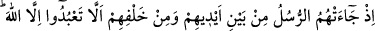
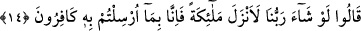
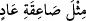
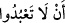
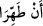

eden sizden evvelki âsî inatçıları çarpan azâbın, sizleri de çarpmasından başka çâre
kalmamış demektir. Çünkü bu inatçılar sizin tekzîbdeki, bile bile inkâr ve inattaki
seleflerinizdir; siz de onların izinden gittiğinize göre tıpkı onlar gibi helâk olacaksınız
demektir.
Mukâtil der ki: Âd ile Semûd, Mûsâ ile Karun ve İlyas ile Elyesâ amcaoğlu idi, Îsâ
ile Yahyâ ise teyzeoğlu idi.
Bu konunun özellikle bu iki kavme tahsis edilmesi, kış ve yaz yolculuklarında bu iki
kavmin toprakları üzerinden geçilmesi ve kendilerine yapılan azâbın izlerinin müşâhede
edilmesi sebebiyledir. Diğer bir ifâdeyle sadece Âd ve Semûd’un zikredilmesi,
bunların, yaz ve kış seferlerinde müşriklerin izlediği güzergâh üzerinde oldukları için
uğradıkları azâbın izlerinin müşriklerce gözlemlenebilmesinden kaynaklanmaktadır.
14. Peygamberler onlara: Önlerinden ve arkalarından gelerek Allah’tan
başkasına kulluk etmeyin, dedikleri zaman, «Rabbimiz dileseydi elbette melekler
indirirdi. Onun için biz sizinle gönderilen şeyleri inkâr ediyoruz» demişlerdi.
“Peygamberler onlara: Önlerinden ve arkalarından gelerek…”
Öyle anlaşılıyor ki bu, (iki peygambere cemî olarak rusül/peygamberler denmesi),
tesniye yerine çoğul kullanılması kabîlindendir. Çünkü Âd’a gelen Hûd (a.s.), Semûd’a
gelen ise Sâlih (a.s.) idi.
Cümle, (__WORD__) ibâresinden hâl olup takdîrindedir; yani: peygamberler geldiği
ve onları tekzîb ettikleri vakit kendilerini çarpan azâba benzer bir azâba karşı demektir.
Belirtmek istediğim, zarfın müteallakının ondan hâl olduğudur. Çünkü “sà’ika” gökten
inip çarptığı şeyi helâk eden bir ateş parçası olmak hasebiyle maddî bir şeydir; zaman (__WORD__) ise maddî şeylerin sıfatı olmadığı gibi hâli de olmaz.
Peygamberler, Ey kavmim! “ Allah’tan başka bir varlığa kulluk etmeyin! dedikleri
zaman…” ifâdesiyle sadece Allah’a kulluk edilmesini emrederler. Buna göre (__WORD__)
ifâdesindeki (__WORD__) harfi, fiili nasbetmekte olup tıpkı “temizlesinler” (__WORD__) (Bakara
2/125) ifâdesinde olduğu üzre emirle birlikte kullanıldığı gibi nehiyle birlikte de
kullanılır. Kâşifî der ki: “Peygamberler geldiler ve “Allah’tan başkasına ibâdet
etmeyiniz” diye dâvette bulundular.”
“Önlerinden ve arkalarından gelerek;” yani dört bir yanlarından gelip kendileriyle
her şekilde uğraşmışlar; kâh yumuşak kâh sert davranarak kâh imrendirerek kâh
korkutarak; yani her tür irşâd ve nasîhat metodunu kullanarak… demektir. Bu mânâya
göre, hissî bir yön ve bunları kuşatan bir yer söz konusu değildir.